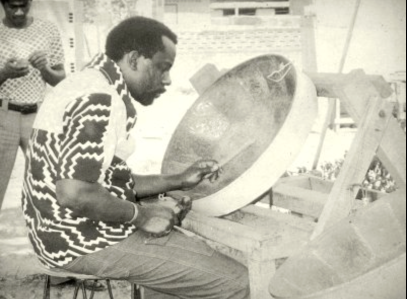

Born: 1936. Legendary Trinidadian pan tuner and innovator, often called the “tuner’s tuner” for his revolutionary contributions to the steelpan. His work transformed the instrument from a basic percussive tool into a sophisticated musical instrument capable of complex harmonies.
Key Innovations and Inventions:
Harmonic Tuning: In 1956, Marshall revolutionized the sound of the pan by introducing harmonic tuning. By tuning notes by octaves and overtones, he gave the instrument its distinctive “bright” and complex tonal quality.
First to amplify the steelpan electronically.
Helped develop the Double Tenor steelpan with Vincent Pompey.
Bands: Leader, tuner, and arranger for the Laventille Highlanders Steel Orchestra. Brought steelpan into churches to accompany hymns.
Scientific Contribution: Participated in the first scientific studies of the steelpan at CARIRI, validating the production process.
Recognition: Awarded the Chaconia Medal (Gold) in 1972 and the Order of the Republic of Trinidad and Tobago in 2008.
Died in 2012 and was honored by his band at a gathering at his home on Erica Street in Laventille where the new Highlanders panyard now stands.

Think you've mastered this topic?
Test Your Knowledge →